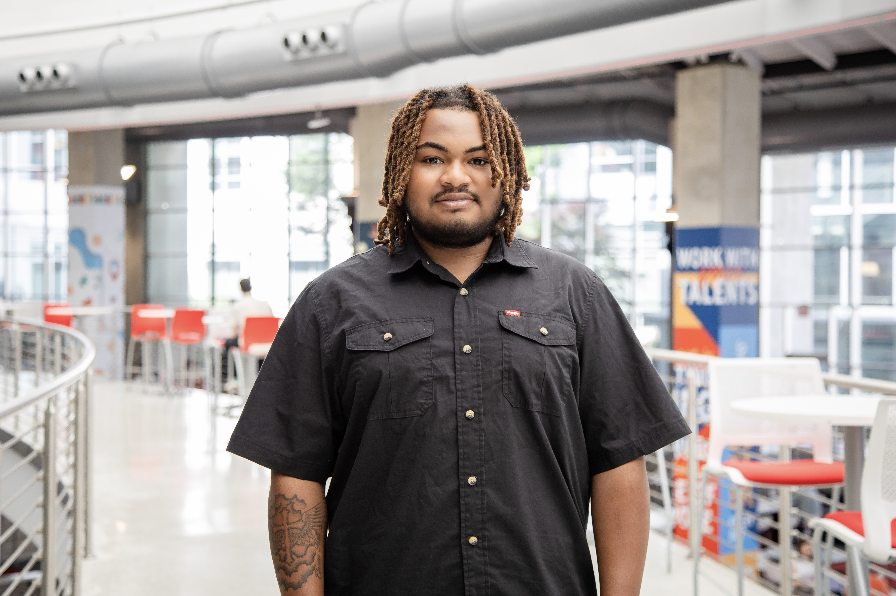

About Me
I am a UX-focused creative with a strong interest in designing digital experiences that feel simple, engaging, and purposeful. My work sits at the intersection of design and technology, allowing me to approach problems from both a visual and functional perspective.
Background
I am currently studying creative technology with a focus on UX and web design. Through my coursework and personal projects, I have developed a strong foundation in front-end development while learning how to apply design thinking to real-world digital experiences.
Skills & Interests
- UX & UI Design
- Front-End Development (HTML, CSS, JavaScript)
- Interactive and Visual Design
- Branding and Visual Identity
- User-Centered Design Thinking
Mindset
I approach design with a focus on growth and iteration, using feedback and testing to improve both the visual and functional aspects of my work. I am especially interested in creating digital products that balance creativity with usability.
